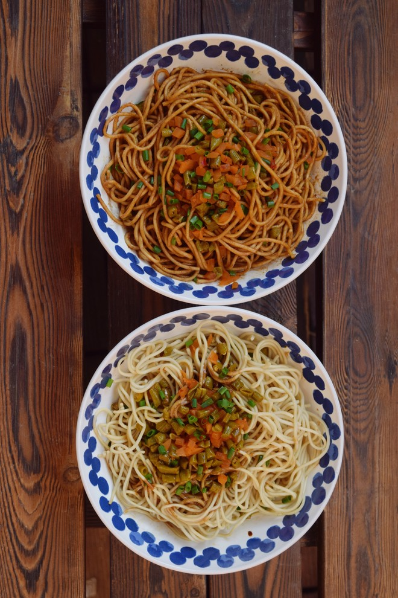

武汉美食
-

热干面
热干面，晶洁爽口。味道鲜美，深受广大市民的赞赏。享有武汉名小吃的美誉，武汉人过早(吃早餐)更是离不开这一种具特色的面食
-
汤包
四季美汤包,一年四季都有,美食供应肉新鲜，肉馅精肉最经典的吃法是先轻咬破表皮，慢慢吸尽里面的汤汁，然后再吃汤包的面皮和肉馅。
-
糊汤粉
糊汤粉，它是武汉人的羊肉泡馍，其传统意义、历史内涵,一碗飘着鲜美鱼香味儿的糊汤粉，扑面而来的是水乡泽国、鱼米之多的气息和味道。
-
豆皮
豆皮，皮酥米糯直流涎，，曾接待过毛泽东、周恩来、邓小平等多位中外政要。出品花样繁多的小吃，以三鲜豆皮最出名,皮儿金黄,糯米香软，馅料丰富。
-
面窝
面窝,内浇用大米黄豆混合磨成的米浆，撒上黑芝麻,放到油锅油炸、色黄脆香的圆形米饼。吃起来厚处松软，薄处酥脆，流传—百多年，成为价廉物美的武汉特色早点。
武汉景点
-
黄鹤楼
黄鹤楼，是武汉的城市地标之一，因唐代诗人崔颢“昔人已乘黄鹤去，此地空余黄鹤楼”的诗句而名扬天下。登上黄鹤楼远眺，可以看到滚滚长江和武汉三镇风光。
-
古琴台
古琴台，又名伯牙台，位于汉阳龟山西麓，月湖东畔，是为纪念俞伯牙弹琴遇知音钟子期而修建的纪念性建筑。
-
樱园
樱园,采用日式庭院造景，以仿日本建筑的五重塔为中心，配以日本园林式的湖塘、小岛、溪流，再加上万余株樱花遍植园内，使得整个樱园更有情调。
-
红楼
红楼,北京大学旧址的一部分，是一栋地上四层、地下一层的"工"字形长条建筑闪烁出砖红色的西洋式建筑，它是五四运动的重要活动地点之一。
-
龟山电视塔
龟山电视塔，曾经是武汉最高的建筑，也是武汉一处重要的景点，登上电视塔，武汉三镇的美景尽收眼底，会发现整座城市欣欣向荣。